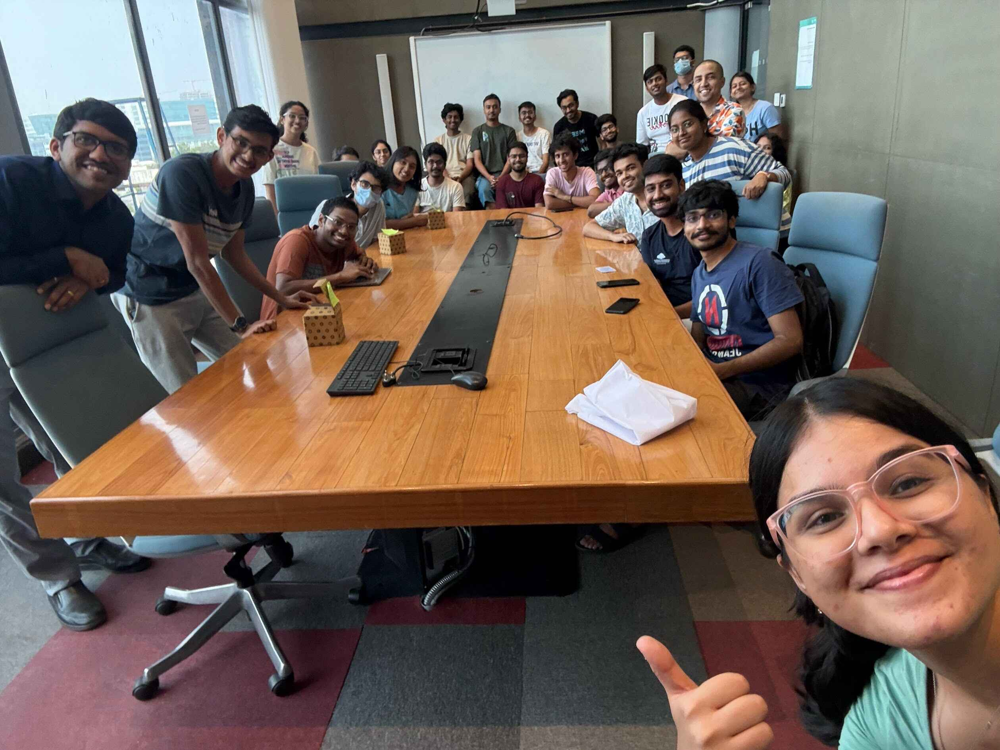

Hi, I am Arihant
I’m a Computer Science student and researcher at IIIT Hyderabad. I care about learning things properly and building with clarity and purpose. I like working on projects that feel meaningful, and I’m still figuring out what that means for me long-term. I’m also interested in sustainable development, since it is our duty to save our planet’s future. Outside of code, I enjoy reading, playing and listening to music, discovering new things, and watching the waves crash on the shore.
Where I Worked
Open Source Developers’ Group, IIIT Hyderabad
Coordinator Mar 2025 — Mar 2026 · 1 year
Tech/Events Team Member Feb 2024 — Mar 2025 · 1 year 1 month
I didn't want to stretch myself out too thin joining too many clubs and societies, and ending up not contributing to any of them. So I looked at all the clubs, and I looked at my skills and interests, and decided that I would have the most impact at the Open Source Developers’ Group. Hence this has been the only club I applied to and got in in my entire time at IIIT. As part of the Events team, I took a session on Introduction to Open Source, open at all but aimed primarily at freshers. As part of the Tech team, I helped create the Team Members section of the Club website, making that my first experience with Next.js. In my second year, I got promoted to the position of Club Coordinator. As a Coordinator, I was managing the development of various projects under the club, and trying to come up with new events that will take the club to new heights. Some of the events I helped organise include HackIIIT '26, Build2Break at Infinium, Worst UI Hackathon, Build With AI, Intro to GSoC, Intro to Git
Software Engineering Research Center, IIIT Hyderabad
Undergraduate Researcher Mar 2025 — Present · 1 year 4 months
I joined SERC because I was drawn by my interest in sustainable technology and the impact of software on the world. Under the guidance of Dr. Karthik Vaidhyanathan, I am exploring ways to make software and AI systems more energy-efficient and environmentally friendly. My work here is helping me understand how even small changes in code and design can make a big difference for our planet. More information as research progresses!


Wikimedia Foundation
Technical Talk and Participant Session Coordinator Jul 2024 — Oct 2024 · 3 months
I had the opportunity to help organize technical talks and coordinate sessions for a Wikimedia event held at Hotel Hyatt in Hyderabad in 2024. It was exciting to work with speakers and participants from all over, making sure everything ran smoothly and everyone got the most out of the experience. This role taught me a lot about teamwork, communication, and the open-source community. The most surprising thing from this entire experience was actually getting to meet so many of the invisible people that keep Wikimedia and its various projects running, and how selflessly they contribute to make knowledge accessible to all.
Infosys
Internship Trainee May 2019 — May 2019 · 1 month
When I was in ninth grade in school, we got to hear about a program that Infosys was running. Students from various schools who were recommended by their teachers had to give an entrance exam, and if they passed, they would get to go to the Infosys campus in the summer for 10 days, and learn about various technologies used there. I was lucky enough to get selected, and I got to learn about HTML, CSS, JavaScript, Python, and machine learning on Microsoft Azure. I also got to visit a software company's campus for the first time, which was a great experience.
Where I Studied
SAI International School, Bhubaneswar
I joined SAI International in kindergarten, just a year after it was made, in 2009, and left only when I finished my 12th grade, in 2023. From the outside it looks just like an ordinary CBSE school, but little did I know that I would make some of the best memories of my life in the 14 years I spent at this very place. My teachers and friends have profoundly shaped my life in ways I couldn't have even imagined, whether in academics, sports, music, or just life in general.


IIIT Hyderabad
I joined IIIT Hyderabad in 2023, after getting an All India Rank of 1 in the UGEE exam. It felt like this college was different from the others, like it was calling out to me, and I knew I had to be here. The campus is beautiful, and the people are even better. Yes, it is not always easy. But easy gets boring over time. As they say, “If you’re the smartest person in the room, you’re in the wrong room.” I can’t wait to see what the future holds for me here. I am enrolled in the Computer Science dual degree (CSD) programme, so I expect to graduate in 2028.